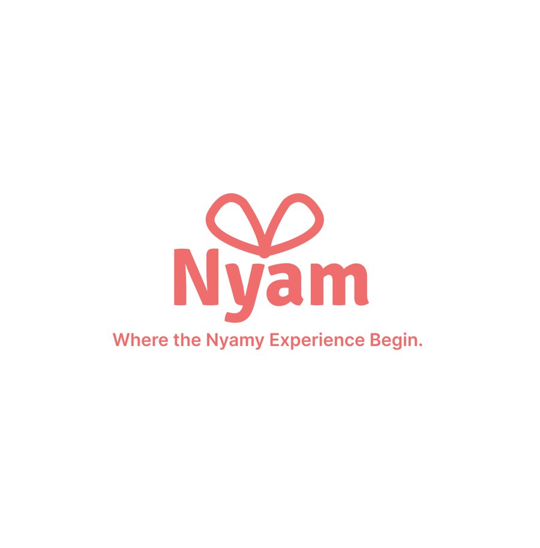

UX Case Study
Nyam
An AI-powered, emotion-aware snack subscription service.
- Role
- UX Designer
- Year
- 2024
- Tools
- Figma
- Type
- E-commerce app

Overview
Nyam is a personalized snack subscription service that goes beyond delivering snacks. Built around emotional connection, it uses custom surveys and an emotion-based recommendation system to understand each user's mood, stress level, and preferences.
The idea
Every snack is tagged with emotional cues like comfort or energy. That lets the app suggest treats that match not only what someone is craving but also how they're feeling, turning snacking into a small source of support for students, busy workers, and anyone who wants some personalized comfort.
The name comes from the Korean onomatopoeia for eating (“nyam nyam”) and is meant to sound as playful as the product feels.
Key features
- Onboarding survey that builds a taste and mood profile
- Emotion-tagged snack catalog and recommendation engine
- Subscription box customization and checkout flow
Final presentation
Interactive prototype
Click inside the prototype to navigate it.